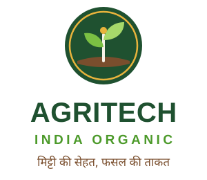

Logo, colours, typography, voice and templates — use these consistently on website, packaging, social media, visiting cards and banners.
मिट्टी की सेहत, फसल की ताकत।
Healthy Soil, Stronger Harvest.
Every Indian farmer and home gardener should get pure, affordable, chemical-free organic fertilizer delivered to their doorstep.
The mark is a sprouting seedling rising from soil inside a golden ring – growth, nature and a harvest-gold promise of quality. Download the SVG files below (scalable, print-ready).

Forest Green leads. Leaf Green supports. Harvest Gold is the accent — use sparingly for highlights and call-to-action.
Suggested ratio: 60% Cream/White · 25% Forest Green · 10% Leaf/Sprout · 5% Gold. Body text: #1E2A22.
Weights: 600 SemiBold, 700 Bold. Free on Google Fonts.
Weights: 400, 600, 700. Supports Devanagari & Latin. Free on Google Fonts.
| Use | Font | Size (web) |
|---|---|---|
| H1 / Hero | Poppins Bold | 40–56px |
| H2 / Section | Poppins Bold | 28–38px |
| Body | Mukta Regular | 16–18px |
| Label / Button | Poppins SemiBold | 14–16px |
Talk like a trusted village agri-expert. Easy Hindi first, English support.
No exaggerated claims. Give dosage, benefits and results clearly.
Respect the farmer: "किसान भाई", "आपकी फसल", "हम साथ हैं".
Sample lines: “रसायन छोड़ें, जैविक अपनाएँ।” · “कम लागत, ज़्यादा मुनाफ़ा।” · “Pure Organic. Proudly Indian.”